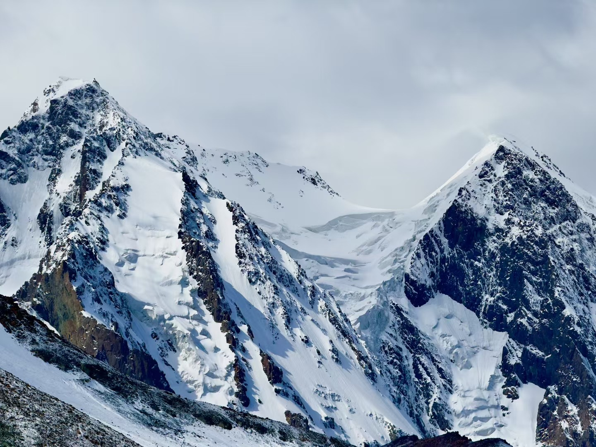
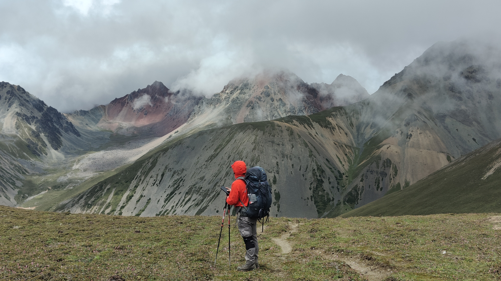
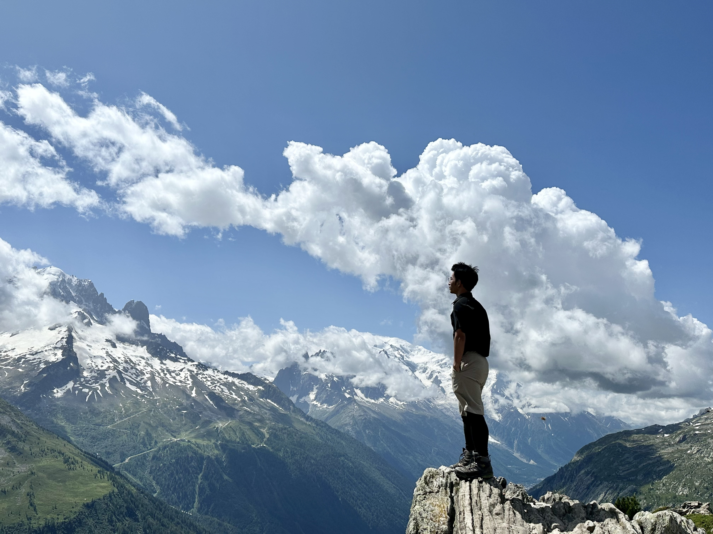
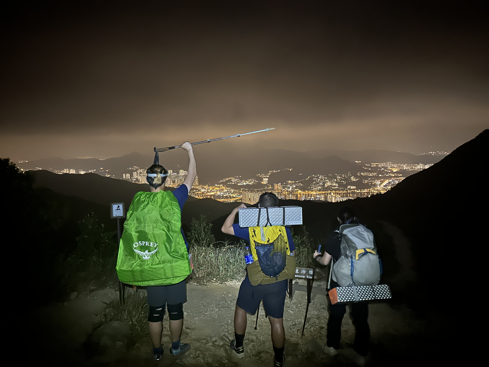
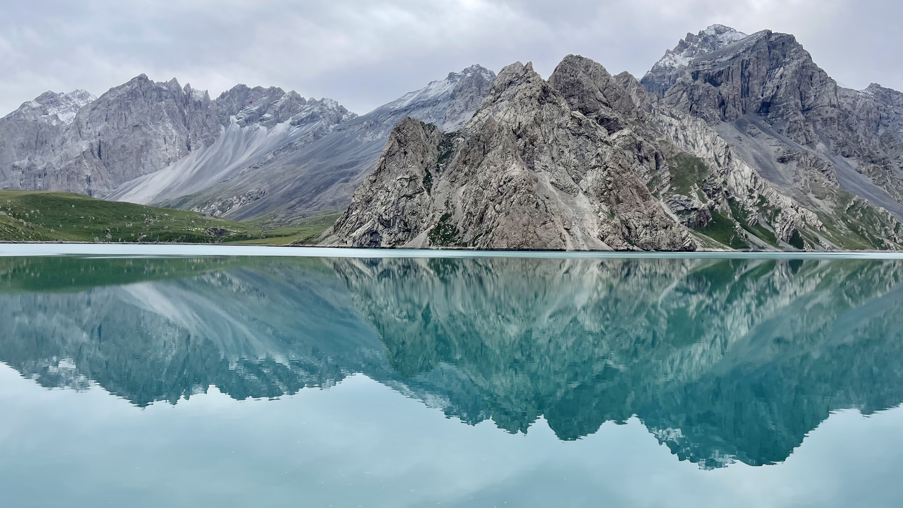
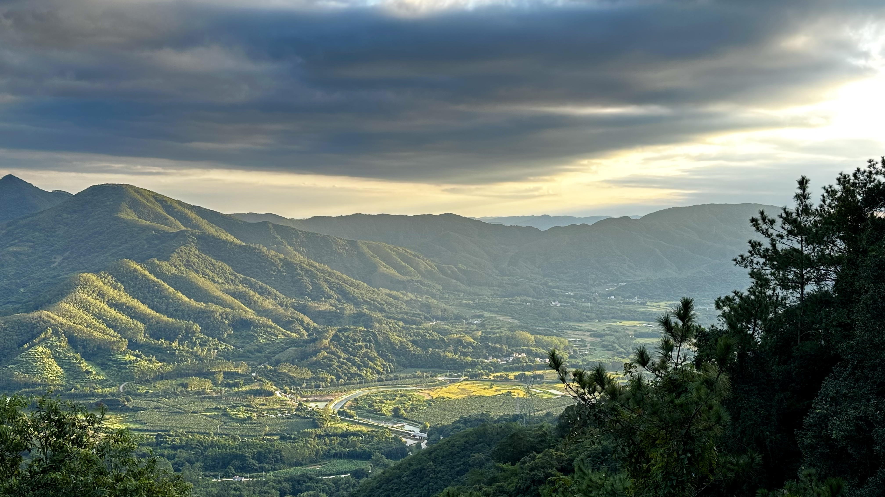
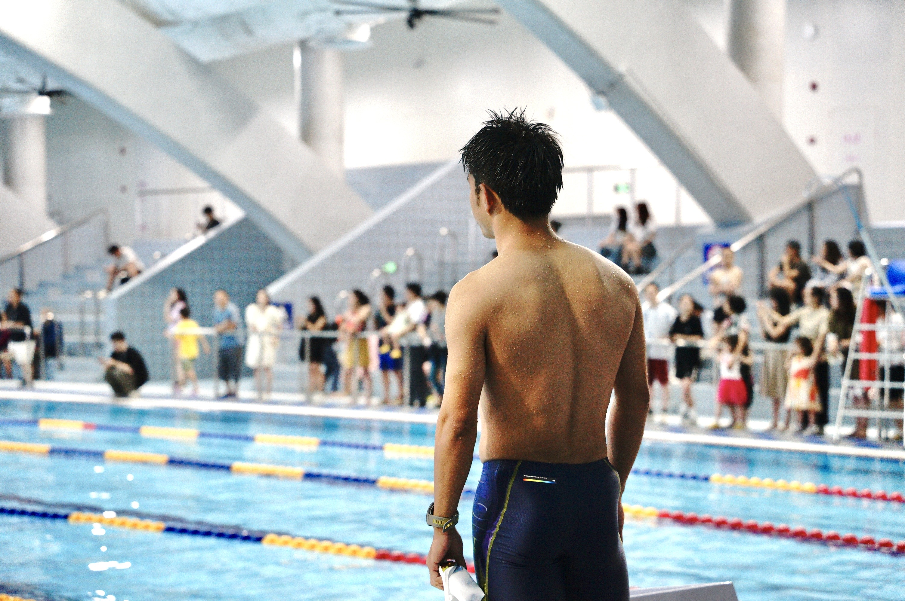
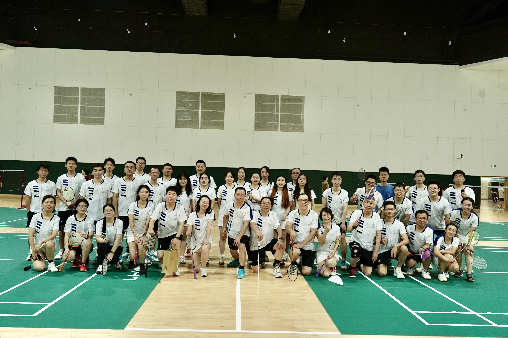
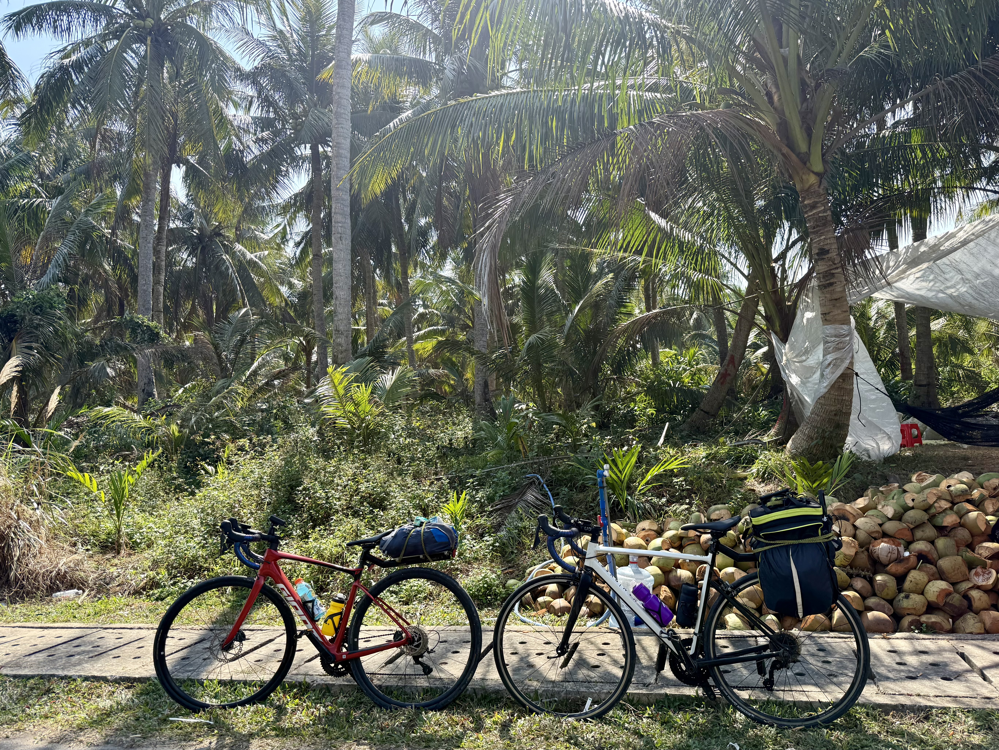
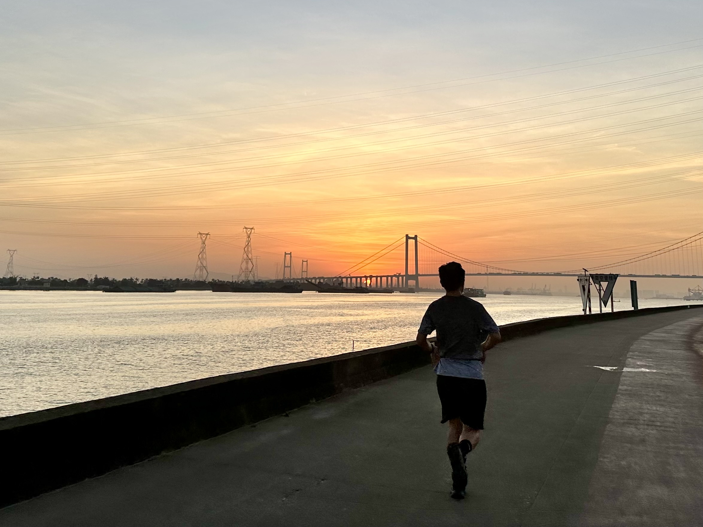

A DIFFERENT PERSPECTIVE
Beyond research.
On the trail, in motion, and looking inward.
01 / HIKING
Out on the trail.

Bogda Grand Circuit
Beauty after wind and snow. Going through hardship together can change the way people relate to one another.

Meili North Slope
A contemplative journey. At altitude, oxygen deprivation briefly had me convinced I had grasped the meaning of life.

TMB · Tour du Mont Blanc
The Alps of my childhood imagination, made real. A journey that changed the course of my life, like the flutter of a butterfly’s wings.

MacLehose Trail
100 km between sea views and the city, walking and talking together late into the night.

Wusun Trail & Kalajun Grasslands
Following an ancient trail across the grasslands, finding our way safely through unexpected danger.

Chuandiding
Two days, 48 km, 5,000 m of ascent. Hell for the legs; paradise for the eyes.
02 / SPORT
In motion.

Swimming

Badminton

Cycling

Running
03 / MEDITATION
Looking inward.
Since high school, I have been drawn to Zen, Indian yoga, and the exploration of superconscious states. The ideas of Jiddu Krishnamurti and Swami Vivekananda have had a lasting influence on me.
For me, studying AI and practicing meditation are both ways of better understanding what it means to be human.